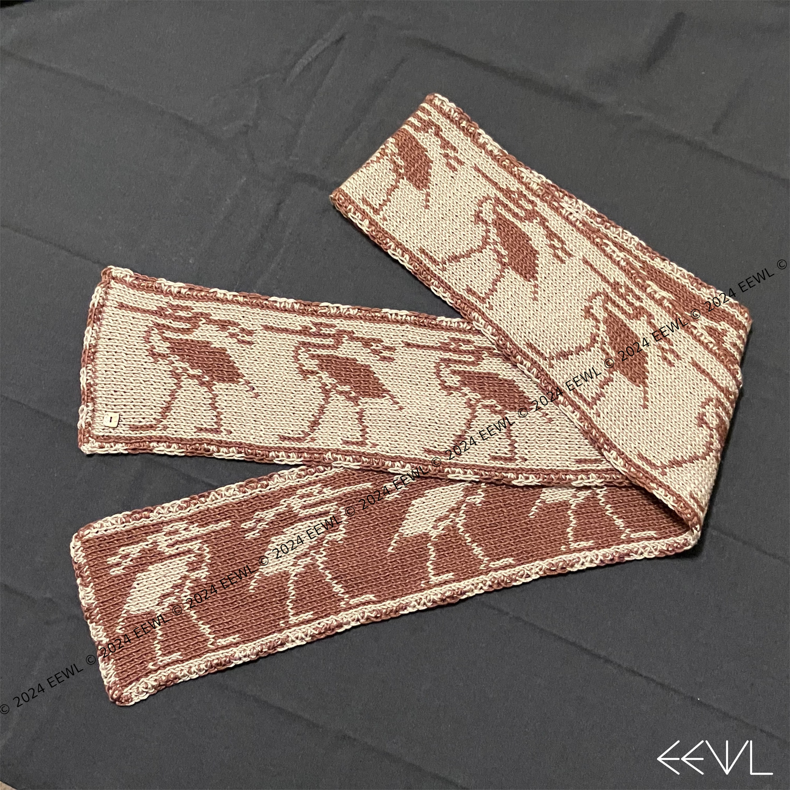

EEWL: A home for creative pursuits
Music
I play the piano. You can follow the music at the links below:
Art
I design wearable art inspired by Ancient Egyptian art and culture. You can follow the art at the links below:
Design Gallery
1 / 11

The Bennu Bird
2 / 11

Queen Nefertiti
3 / 11

Sun god Ra in his solar barque
4 / 11

Khepri
5 / 11

Sun god Ra, seated
6 / 11

Eye of Horus
7 / 11

Winged Goddess
8 / 11

Aten, the Solar Disk
9 / 11

Lotus Flower
10 / 11

Djed Pillar of Osiris and Tyet Knot of Isis
11 / 11

Egyptomania Sun, Lotus, and Papyrus